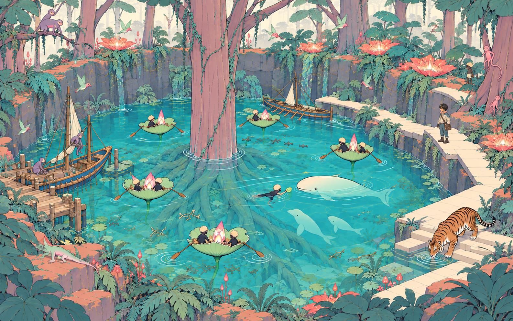

改前

改后

已默认接入叶面与岩壁改进，环境整合54/54、巡逻裁剪专项4/4通过。当前与目标仍有差距，整体未验收；最新正式默认60帧约18.6 FPS，仍需继续优化。
打开正式游戏中层机位 · 进入游戏 · 验证边界与下一步

固定机位，启动相位不同；不要把动物位置差异当本批造型改动。


中央冠横伸缩小、浅弧叶；瀑流变细低亮。岸根工厂54→9批，正式道路拟合后36→9批。近岸遮挡仍明显，性能尚未达标。


改为干净局部开口，贴镜保护2.2米。54项整合通过；单页60帧实测约9.9FPS，仍需性能优化。近岸植物遮挡尚未完全解决。

巡逻裁剪已接入，但本次实景没有巡逻士兵，不能称它改善湖沼帧率。默认生产页60帧约10.5FPS；整体仍未达标。实现与验证范围

减少绘制提交尚未提高完整游戏FPS，保留原正式绘制。38项专项通过；候选与失败证据。


精确三角索引已默认接入，保留全部17点支撑与真实巡逻饮水动作。三个差分专项通过；正式60帧18.6FPS，虎更新41.6→3.14ms，仍未流畅或达到90分。原支撑套件两项既有失败、V3爪底视觉间距与控制台异常仍需处理。实现与实际证据


正常默认V3蒙皮，两真实时点相隔5.2秒，位置和步态改变。
正式默认60真实帧20.9FPS/47.94ms，中层与岸缘机位不同，不作为全场景保证。短外套信使、花船与游泳者在正式入口可见；平台、根系和稳定帧率仍有差距。


起点放置后实际按W行走9秒，正式物理与相机持续更新。四时点人物可见，近叶硬边与遮挡仍有差距，未覆盖整个环路。

06:13实施截止，06:15保存交付。正式默认改进保留；整体与信使未通过90分验收。近叶硬边、根系层次、V3爪底对齐与稳定帧率仍待处理。